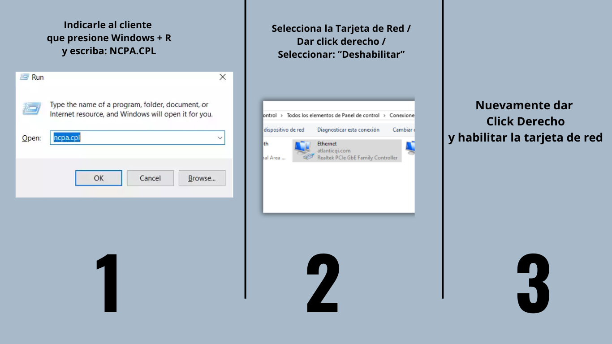

Ethernet OFF
1. Indicarle al cliente que revise los puertos detras del Router
2. Verificar que este conectado el cable de Red que va hacia el dispositivo
3. indicarle que desconecte y conecte el cable de Red en el Router
Encendio Ethernet?
Confirma Navegacion con el cliente
Soporte Efectivo
Reclamos ▶ Averia ▶ Internet DSL/MSan ▶ Posible router dañado ▶ Se paso Checklist Servicio ok
Si no Navega
Seguir Checklist Luces OK No Navega
Acciones:
Indicarle al cliente que cambie de Puerto el cable
Encendio Ethernet?
Preguntarle al cliente si tiene otro cable de red y reemplace el cable
Encendio Ethernet?
Accion a tomar:
1. Indicale al cliente desde su computadora haga los siguientes pasos:

Generar Queja a TDA (Terreno)
Tipifica como: Reclamos ▶ Averia ▶ Internet DSL/MSan ▶ Posible router dañado ▶ Se genera averia
×

Realiza PING a Google
▶ Indicale al cliente que vas a realizar pruebas desde el computador
▶ Sigue los pasos de la imagen
Resultados del PING
Si Sale este resultado:
Confirme cliente navegacion
Tipificar como Soporte Efectivo
Realizar WF Por Guia Interactiva
Reclamos > Avería > tv IPTV > sin acceso a guía interactiva WF
Importante: informarle al cliente que en 48hrs. Estará resuelto el inconveniente